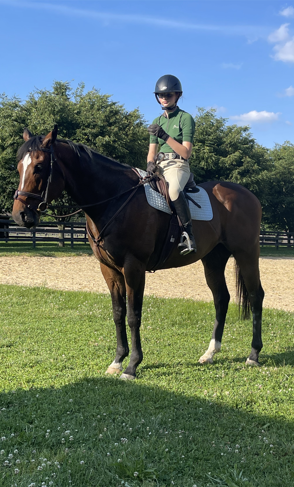
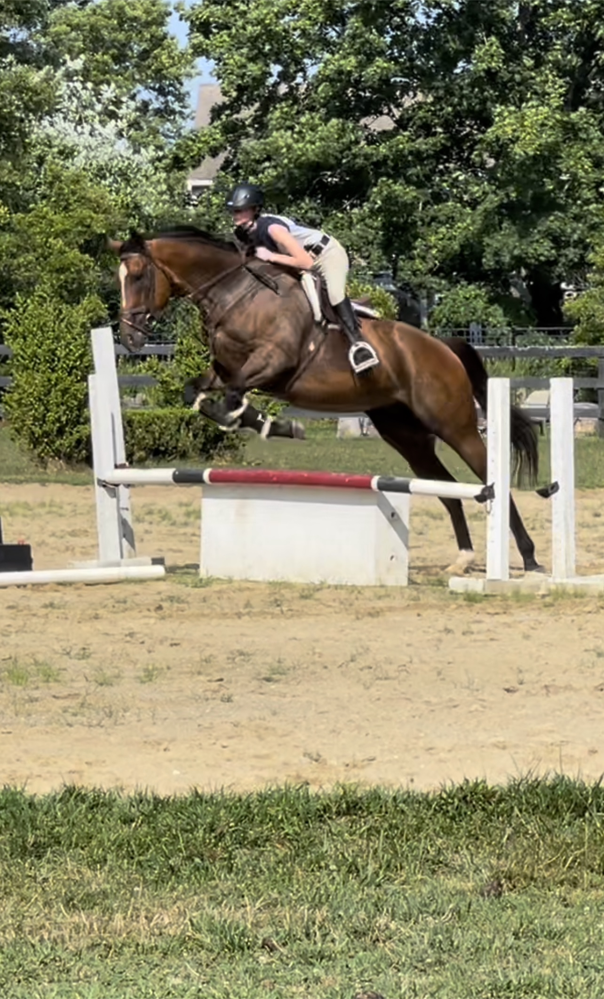
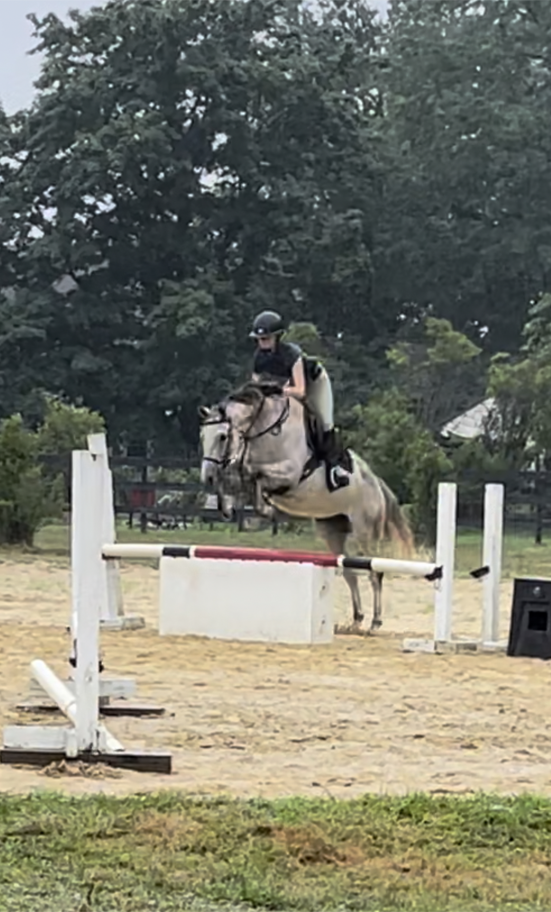

About Me
Avery Weksler-Hart is a student at Marlboro High School. Avery is enrolled in the first level pf the Honors Web Design Progam, and hope to continue it throughout her high school years. Outside of school, she tends to her horse, Jersey, and actively rides after school. Avery has been riding for about ten years and hopes to become a professial in the future. As a hardworkinhg student in general, she takes pride in her work in and out of school.